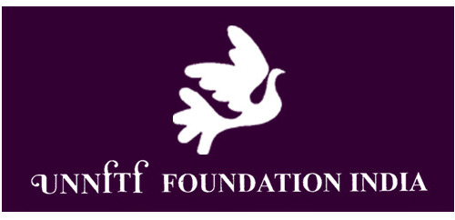
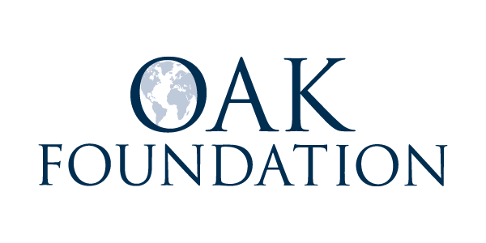
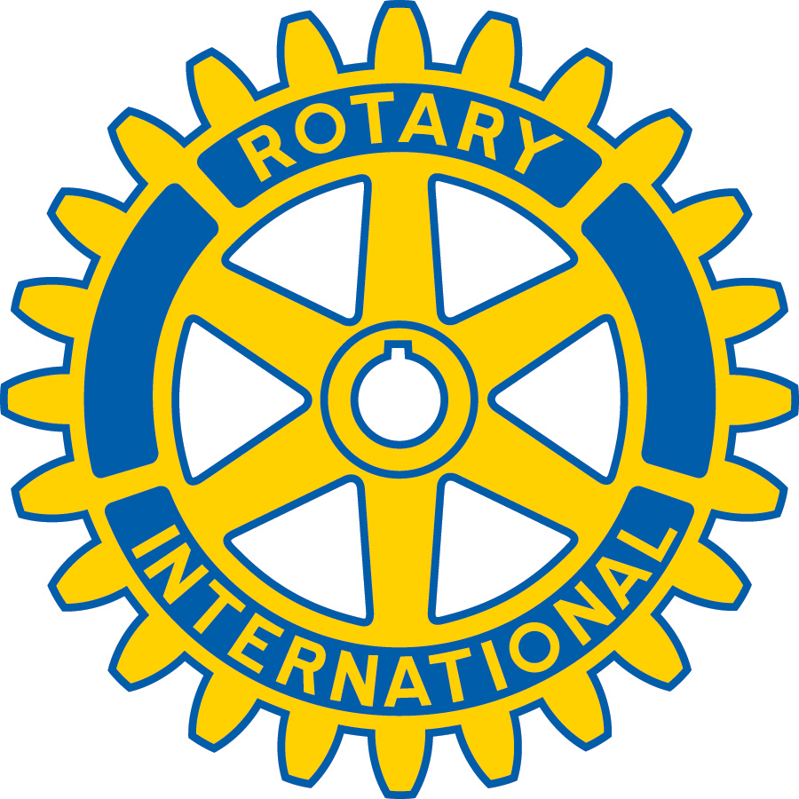
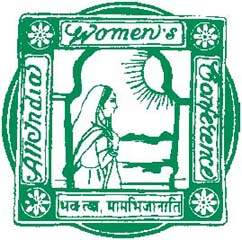
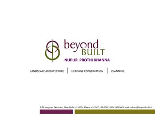
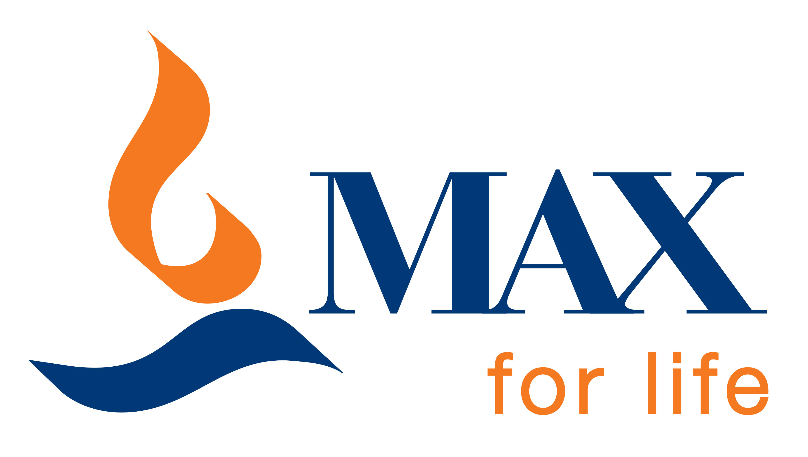
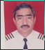

Our Partners
The people who have been supporting us throughout and have helped us become a success

We owe our existence to the founders of Unniti Foundation: Dr. Ravi.I.Gulhati and Dr. Kaval Gulhati. They have been our inspiration, role models and guides. We are grateful for the great help we have received from their revolving fund for individual assistance to needy girls and women. NAVYA at Lakshmibai college and NEEV at Jangpura were started with the financial help received from Unniti Foundation.
Visit Website

We are grateful for the financial assistance received from the Oak Foundation. Besides the financial aid, Vinit Rishi of the Foundation has helped us in building our capacity to initiate and experiment with new vocations in order to suit our beneficiaries.
Visit Website
Nav Abhiyan is very grateful to Guild of service, for their elder sisterly guidance and sharing their experiences with us.
Visit Website

The Rotary Club has helped us in promotion of health and hygiene as well as through provision of essential aids. We can never forget the timely support received from Shri Virender Malik, President, Rotary Club.
Visit Website

We can never thank enough the members of AIWC for guiding and helping us at each step of our growth, by providing technical training and guidance.
Visit Website

Heritage and cultural awareness workshops conducted by young architects of the Beyond Built Trust have inspired our children to the cause of cleanliness, heritage and culture.Their constant support through regular activities is much valued.
Visit Website

This leading medical service provider has been a regular supporter of Neev and has helped in provision of health services to our children and their mothers through regular check-ups and inoculation. Max India is rendering a great service to the health of India’s future through generating awareness amongst children and their parents about health and hygiene.
Visit Website
The recently opened new branch at Jangpura Extension has become a friendly guide for our children. Our children benefit from learning about the banking system. They also love to join their cleanliness drive and participate in various programmes specially organized for them.
Visit Website

We are very grateful to Canara Bank’s Welfare Programme for fulfilling our requirement of uniform and furniture in our hour of need. We owe a debt of gratitude to the convenor of the Programme, Ms. Saroj Sachdev.
Visit Website

We are grateful to all the members of Capt. Kohli Trust for setting an example for our children and others in the society. The Trust has been created in the memory of Capt. Kohli by his wife, along with officers of Air India. This trust has provided valuable support through sponsoring education of six needy children.

In another excellent example of philanthropy, the young Vij couple has adopted six children on merit cum means basis and has been supporting their educational expenses.
Our Patrons and generous sponsors are our most valuable and esteemed resources. We welcome all local residents,friends and believers in our cause to share their abundance with this really needy section of the society. Learn more on how to contribute here.